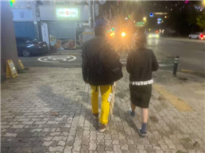

매거진 삼삼오오 · 연재
대구 시네마테크 운동 밑그림 그리기: 한받과의 대화 - 4(完)

대구 시네마테크 운동 밑그림 그리기:한받과의 대화
대구영화발굴단
(김주리, 금동현, 류승원, 윤소희, 이라진)
누가 우리를 쏘았나!
https://youtu.be/bTH6q7_UYgI?si=3cVlU8812QicdRpk
안개 깔린 이 길을 우린 같이 걸었죠
우리는 아마 30년은 조금 넘었을 거예요
— 아마츄어증폭기, 「사계절 스픈사」 중(中)
나원영(이하 나): 『탐욕 소년 표류기』를 다시 참조하자면, 다사다난했던 세기말~세기 초를 겪으시며 한받 님께 ‘아마츄어증폭기’가 나타났습니다. 이는 첫 음반인 《29세의 자위대》(2002)의 자체 제작으로도 이어지는데요. 이후 대학 졸업과 함께 2003년 2월에 상경하셨다고 알고 있습니다. 서울 생활을 시작하시자마자 굴소년단에서의 짧은 활동과 더불어 (이대 후문에서 산울림 소극장 근처로 옮기기 직전이었던) 라이브 클럽 ‘빵’에서 오디션을 거쳐 아마츄어증폭기로서의 첫 공연을 치르시기도 했고요. 이렇게 2001~3년 동안 아마츄어증폭기가 본격적으로 구체화하는 과정은 한받 님께서 대구에서 서울로 독립하는 과정과 겹친다고도 느껴집니다. 이 당시에 서울행을 결정하시게 된 계기가 무엇인지, 더불어 창작자로서 개시한 당시의 생활이 관객으로서 홍대 앞을 오가시던 1990년대와는 어떤 차이가 있었을지 궁금합니다.
한받(이하 한): 일단은 일자리를 구하려고 온 게 컸던 것 같아요. 그다음에 대구 지하철 방화 사건 때문에 이곳에 계속 있는 것이 무섭다는 그런 두려움 때문에 대구를 떠나 서울로 왔습니다. 물론 그전에 부산에서 연락이 와서 면접도 보긴 했었는데, 거기는 최종 면접에서 탈락해서 부산 쪽은 안 가게 됐죠. 서울에 일자리 구하러 온 김에 졸업 전(2002년) 클럽 ‘빵’에 공연을 보러 몇 번 갔었으니까. 공연 보러 갔을 때, 데모 CD를 만들어서 클럽 ‘빵’ 사장님하고 그날 무대에 섰던 아톰북이라는 친구들이 있었어요. 데모 CD를 주니까 좋게 들은 건지 아톰북 최새봄 씨(이후 핑퐁사운드 레이블 창립)가 저한테 제안했습니다. 클럽 ‘빵’에 한번 오디션을 보는 게 어떠하겠느냐고. 거기서 힘을 받아서 오디션을 봤죠. 클럽 ‘빵’ 사장님이 갸우뚱하는 제스처가 생각나고요. 그래서 저는 당연히 떨어진 줄 알았어요. 그러면서 정말 열심히 일자리를 구했어요. 계속 구하고 구하다가 알바로 동영상 촬영 편집하는 일도 했습니다. 그러다가 우연한 기회로 한예종 영상원의 편집실에 조교로 일하게 된 거죠. 비슷한 시점에 클럽 ‘빵’으로부터 연락이 왔어요. 사장님이 4월 20일쯤 한번 보자고 해서 시작하게 되었습니다.
나: 서울과 수도권 바깥에서 ‘홍대 앞’의 음악을 듣는 경험뿐만 아니라 애초에 서울에서만 가능한 활동들에 참여하는 경험이란 일정과 이동, 소속감 등의 문제에서 절대로 자유로워질 수 없다는 생각을 종종 하곤 합니다. 개인적으로 거주지가 홍대와 그렇게까지 멀리 떨어진 편이 아니어도, 공연이 끝나고 한 시간 넘게 전철을 타고 택시를 타고 집에 들어가는 길에 무언가 허한 기분이 들 때가 많았기도 하고요. 당시의 한받 님께서도 공연 관람을 위해 대구에서 서울까지를 자주 오가셨을 텐데, 이때 관객으로서 홍대 앞이나 서울과 맺는 관계에 대해 어떻게 생각하셨을지가 궁금합니다.
한: 서울에 와서 많이 떠돌았죠. 공연 보고 이제 갈 데가 없어서 오락실 같은 데서 계속 엎드려있다가 첫차 타고 내려가기도 하고…. 정착할 수 없는 환경이니까 공연만 보고 떠돌다가 내려가고 그런 경험들이 많이 있었어요. 그래서 다시 서울에 왔을 때, 가장 작은 고시원 방을 구했죠. 거기서 딱 누우면 몸만 겨우 누울 정도였어요. 그 방 월세가 한 달에 대략 14만 원 정도 됐던 걸로 기억해요. 그 작은 고시원 방에 기거하면서 서울 생활을 하니까 가끔 보러 오던 것과는 또 상황이 다른 느낌이었고요. 홍대 앞 놀이터 근처의 고시원이었어요. 밤에 기타를 들고나와서 홍대 앞 놀이터에서 쳤어요. 막 치면서그냥 아무 노래나 부르고 그랬었는데…. 그 당시 홍대 앞 놀이터는 완전 난장판이었거든요. 술 먹으면 다 글로 와. 자기들끼리 막 파티도 하고, 그런 와중에 저는 기타 치고 그랬었어요. 취객들이 와서 듣다가 가기도 했고요. 그때 만들었던 노래가 「극좌표」예요. “오늘 밤 내 방에 아무도 없어요.” 그렇게 노래들이 서울에서 만들어지기 시작했죠.
나: 자연스럽게 서울에서의 음악 창작으로 좀 넘어가게 될 것 같은데요. 아마츄어증폭기의 발매작들은 대부분 홈 레코딩, 특히나 PC를 활용한 여러 하드웨어·소프트웨어를 바탕으로 제작하셨다고 알고 있습니다. 이런 작업 환경은 똑같이 로파이(lo-fi)라 불려도 스튜디오 장비를 사용한 녹음과는 다른 좀 더 ‘디지털’한 사운드를 만들어내지 않았을까, 싶기도 합니다. 개인적으론 이런 음향적 특징이 아마츄어증폭기의 생생하고 단출한 형식과도 여러모로 어울린다고 생각하는데요. 한받 님께서 당시 녹음 작업을 하시며 특유의 음향을 어떤 지향이나 의도로 만드셨는지 이야기를 들어보고 싶습니다. 뭔가 어떤 음악적, 음향적 지향 같은 게 있었거나 혹은 당시 스튜디오가 어려우니까….
한: 아니요. 그런 생각은 안 하고 그냥 ‘내가 할 수 있는 선에서 재미있게 해보자’라고 생각하고 하나의 음향으로 접근했어요. 그래서 노이즈도 하나의 음향적인 요소로, 뭔가 색다른 느낌이 확실히 들었고. 음악 녹음하고 편집하는 프로그램이 DD Clip(디디 클립)이라는 프로그램이었는데, 그러니까 PC 잡지 있잖아요. PC 컴퓨터 잡지에 뭔가 부록으로 프로그램들, CD 데모 프로그램들을 줬는데 ‘DD Clip’이 그중에 하나였어요. ‘DD Clip’을 검색하면 지금도 있는데, ‘DD Clip’이 러시아의 대학원생들이 만든 그런 상당히 마이너한 프로그램이거든요. 그 프로그램이 좋더라고요. 《29세의 자위대》(2002)는 윈도우의 레코드 프로그램 레코드 녹화 기본 박스로 녹음했어요. 《극좌표》(2004)는 ‘DD Clip’으로 녹음했죠.
나: 그러면 약간 당시에 썼던 좀 다른 Audacity(오더시티)든…. 이런 것들이 있다고 아는데, DD Clip만의 특별히 마음에 드시는 구석이 있으셨을까요?
한: 네. 일단은 비주얼 느낌이 재미있었어요. 또 직관적으로 녹음하고 효과를 주는 것, 그러니까 믹싱이나 효과를 주고 변형해서 다시 듣고 하는 것들이 일종의 재미였죠. 녹음하는 것뿐만 아니라 다듬고 편집하는 것들에 재미를 느꼈어요. 그런 재미를 주는 프로그램이었어요.
나: 그게 약간 비디오를 편집하시는 거랑 또 되게 많이 겹치는 듯합니다. 구술을 직접 들으면서 계속 드는 생각은 한받 님께서 즉흥적인 것을 가지고 논다는 느낌이 항상 있어요.
한: 네,맞아요.
나: 그런 게 약간 영화 활동과 음악 활동일 수 있으면, 항상 그 축에 즉흥적인 활동을 최대한 재미있고 길게 끌고 나가는 게 있다고 했는데요.
한: 목적지가 정해져 있지 않죠. 어디로 갈 수도, 알 수도 없는 그런 상황에서 즐기면서 가는 그런 거를 추구했어요.
나: 개인적으로 그런 것들이 사운드에서도 많이 드러난다고 생각해요.《극좌표》 음반을 정말 좋아하는 것도 바삭한 느낌 때문이에요. 개인적인 인상이지만, 약간 바삭한 느낌. 기타를 쳐도 볼륨 같은 게 좀 바삭한 상태예요. 비슷하게 주변의 노이즈들도 약간 먼지처럼 떠 있어서…. 그런 것들이 라이브 할 때와 또 다른 사운드 경험인 것 같아요. 한받 님께서 어떤 잡음이나 소음에 있어서 노이즈를 특히 선호하셨는지 궁금합니다.
한: 일단 그 추구하는 것이 이제 ‘노 파이’라고 하겠죠. 노 파이. 로파이도 아니고, 노 파이. 피델리티가 아예 없는 것도 있고…. 그런 것들을 추구하면서 노이즈를 하나의 음향적인 요소로서 갖고 가는 측면도 확실히 있었어요. 《극좌표》 같은 경우에는 ‘더블링’만 했어요. 아무런 효과가 없었죠. ‘더블링’만 해서 만들자는 그런 목표가 있었어요. 근데 어떤 전화벨 소리에 집착한다는 사실이 나중에 느껴지더라고요.
나:「폰팅할까요」 같은….
한:「폰팅할까요」라는 노래도 그렇고요.
나: 그렇게 따지면, 전화벨 소리도 되게 음질이 안 좋죠.
한: 맞아요. 좀 멀리서 지지직거리고 그러는 게 좀….
나: 엄청나게 싸구려 음향 기기 아니면, 좋지 않은 해상도들을 최대한 끌어와서 만드는 게 다시 한번 비디오 미학이랑도 엮여 있는 것 같아요. 이다음 질문이 그런 2000년대 활동들을 좀 엮어보는 내용입니다. 1990년대의 맥락과 같이 두고 보았을 때, 아마츄어증폭기 활동이 누군가에게는 영화에서 음악으로의 전향으로 느껴질 수 있지 않을까 싶은 생각이 들기도 합니다. 그렇지만 당시의 한받 님께서는 한국 예술 종합학교 영상원·영화 아카데미에서 근무하시고, 특히 중편 영화 〈홈 마이나〉(2005)를 제작하는 등 여전히 영화 활동을 병행하고 계시기도 했어요. 다만 이는 1990년대 대구와는 조금 다른 환경이지 않을까 추측하게 되는데요. 대구에서의 영화 활동이 ‘영화언덕·제7예술·VVF’ 같은 공동체나 ‘열린 공간 Q’와 같은 공간이 기점이자 기반이 되었던 것에 비해, 서울에서의 음악 활동은 그만큼의 기점도 기반도 없이 훨씬 불안정하고 고립된 환경에서 진행된 듯하거든요. 그래서 이즈음에 뭔가 ‘영화를 했을 때는 이러했는데 뭔가 음악을 하러 오니 이렇구나’와 같은 차이가 있었는지 그리고 당시 영화 활동에 대한 마음이 있었다면, 어떤 식으로 그 마음을 활용하셨는지 궁금합니다. 그런 의미에서, 아마츄어증폭기 활동과 겹치던 즈음의 영화 활동은 또 어떻게 진행되었는지도 여쭤보고 싶고요.
한: 하나의 앨범 자체가 하나의 영화라고도 볼 수 있고요. 음반 자체가. 《29세의 자위대》라고 했을 때도 그렇죠. 《29세의 자위대》라는 것이 노래가 하나씩 만들어졌는데, 그 노래들이 수렴되더라고요. 그런 이미지로. 또 반대로 보면 《29세의 자위대》라는 타이틀로 음반이 만들어졌을 때, 음반에 수록되는 노래들의 제목들도 《29세의 자위대》로 수렴되게…. 서로가 수렴되는 방식으로 제작이 됐던 거라고 볼 수 있죠.
나: 나중에《소년중앙》 같은 음반들 만드실 때도 약간 짜집기를 해서 패치워크(patchwork)로 만드셨다는 것도, 음악도 이렇게 즉흥적으로 만드신 거군요.
한: 쭉 모여지는 느낌이 있는데, 그게 《소년중앙》이었어요. 그다음 《수성랜드》였고, 《극좌표》였고, 《29세의 자위대》였고 그랬죠.
나: 그런 의미에서 2000년대가 음악과 영화를 왔다 갔다 하며 이들을 한곳으로 모으는 시기였다면, 그 과정에서 뮤직비디오라고 할 수 있는 영상들이 되게 많이 나왔어요. 〈당신은 공중에서 내려오지 마라〉(2003), 〈김추자는 영원하다〉(2006), 〈방리유소년특공대〉(2009), 〈사계절 스픈사〉(2009)와 같은 영상들을 지금도 유튜브에서 볼 수 있거든요. 이러한 뮤직비디오가 말씀하신 것처럼 영화랑 음악을 썼던 거기는 한데, 홈비디오나 홈 레코딩의 측면에서도 당시 영상들이 그즈음 유튜브에서 볼 수 있었던 자작 UCC와 비슷하다는 느낌이 들었는데요. 2000년대에 이런 식으로 뮤직비디오와 가까운 영상들을 만드실 때는 어떤 식으로 작업을 하셨는지 궁금합니다.
한: 음악을 서포트한다는 개념이었어요. 음악을 서포트하는 것으로서의 비디오 형식. 〈골판지〉(2009) 같은 경우에도 그냥 얼굴을 붙잡고 계속 도는 영상인데요. 음악 자체가 가지고 있는 어떤 환각적인 요소를 극대화하는 느낌이 있었죠. 그다음 〈사계절 스픈사〉(2009)도 ‘진과스(金瓜石)’라고〈비정성시〉(허우 샤오시엔, 1989) 배경이 되는 곳에서 카메라를 갖다 놓고 그냥 찍었죠. 사실 기교라고 할 것도 없잖아요. 그냥 노래를 받쳐주는 영상이 되었죠.
나: 조금 다를 수도 있는데, 제가 한받 님의 영상을 이렇게 동영상으로 봤다가 ‘서울시립미술관’에서 어떤 전시를 봤는데, 거기에서 큰 화면으로 선생님 영상을 보니까 또 느낌이 다르더라고요. 이거는 라진 씨께서 말하신 그런 영상 비율이라든가 어떤 매체와 또 엮이는 것 같아서 말씀드려봤어요. 한받 님 영상을 보면 그런 옛날 비디오 TV에도 어울리고, 옛날 유튜브라든가, 이런 영상 전시에도 어울릴 거 같아요.
한: 그 전시회에서 원래 원했던 영상은〈골판지〉였는데요. 그 영상 너무 좋았어요. 그런데 그 〈골판지〉를 찍고 나서 누가 카메라를 훔쳐 간 거예요. 옥탑방에 살고 있었는데…. 다 날아갔죠. 그래서 유튜브에 올린 영상밖에 없어요. 저화질의 영상.
나: 그러면 이제 홍대 인디신 얘기로 넘어가면서 슬슬 마무리할 건데요. 지금도 운영하시는 네이버 블로그에서 2006년 9월부터 2007년까지 ‘홍대 인디신 연구’라는 카테고리에서 많은 단상들을 제시하셨어요. 당시 한받 님의 상황을 조금 정리하면은 《극좌표》를 발매하고 유통했던 핑퐁 사운드가 폐업해서 충격을 받으셨다고 작성하셨습니다. 직접 영향까지는 아니더라도 게시물을 보면 한받 님께서 아마츄어증폭기로 활동할 당시에 있었던 홍대 인디신이랑은 맞지 않는다는 느낌이랄까요? 어떤 괴리를 많이 느끼신 것처럼 보였어요. 그 사이에서 어떤 모순이 체감되는 게, 2007년 눈뜨고코베인 밴드의 연리목 님이랑 인터뷰도 했었는데요. 다시 말해, 한받 님이 2000년대에 이렇게 활동하셨을 때부터 이런 홍대신의 어떤 모순 같은 걸 좀 느끼신 듯합니다. 사실 2019년도에 『아시아 자립음악 연구』 책도 내시면서 이걸 한 번 매듭지으신 것 같아요. 지금의 시점에서 2000년대 중반 홍대 인디신에 대해서 어떤 생각인지, 그때 보았던 것과 달라지셨는지 궁금합니다.
한: 관객으로 보던 입장과 플레이어로서 본 입장, 그리고 ‘레이디쉬 팝홀’의 매니저로서, 기획자로서 있었는데요. 기획하게 되면서 좀 더 신에 대해 관심을 가지게 된 것 같아요. 하나의 플레이어로서는 불러주면 가서 공연하고 이랬는데요. 기획하고 짜다 보니, 좀 뭐랄까요? 어떤 격차일 수도 있고 공평하지 않은 신의 모습 이런 것들이 많이 느껴지더라고요. 그리고 블로그를 개설해서 그때그때 생각나는 것들을 그냥 계속 올렸습니다.
나: 그때 댓글이라든가 뭔가 반응해 주시는 분들이 계셨나요?
한: 네 있었죠. 그래서 그런 친구들이 보니까 홍대 음악 동아리 ‘차라투스트라’에서 활동하는 학생들이 많았어요. 그 친구들이 ‘아워 타운’이라는 블로그를 개설해서 그 당시 홍대 앞에 활동하던 저뿐만 아니라 많은 음악가를 응원했어요. 거기에 이제 또 하나의 담론들이 막 형성됐고. 그 블로그가 지금은 없어요. 참 아까운 게, 열성적으로 응원하는 그런 친구들이 딱 그 몇 기수 말고는 뒤로 없었던 예요. 그게 2009년 두리반 투쟁, 2010년 이즈음 직전부터 한 흐름이었어요. 공평한 어떤 신의 구성 요소로서 기능해 보자면서 박다함 등 그런 친구들하고 함께 클럽을 만들자고 의기투합하다가 제가 중간에 유학 간다고 빠졌죠. 막 이러다가 흐지부지되고, 그런 것들이 나중에 이어져서 지금의 신도시 같은 공간으로 나아간 측면이 있어 보여요.
나: 다음 질문이랑 또 연계되는 말씀 이미 해 주셨는데요. 2010~11년 동안의 두리반 투쟁과 연결 지어서 이야기하곤 합니다. 그렇지만, 한받 님께는 두리반과 같은 문제 상황과 자립과 같은 문제의식이 그 이전부터도 분명하게 존재했었다고도 느껴집니다. 찾아보면, 한미 FTA 반대 집회나 기륭전자 투쟁 문화제 등에 참여했는데요. 아까 카메라에 대해서 말씀하신 것처럼, 카메라를 들고 즉흥적으로 현장에 참여한다든가 하는 방식으로요. 더불어서 사실 되게 중요하다고 생각하는데, 제가 남양주에 살고 홍대에 갈 때는 경의·중앙선을 타거든요. 아이러니하게도 경의·중앙선이 들어오는 동교 지하 차도 인근을 재개발하는 시기가 진짜 2005~2006년 때로 올라간다고 하더라고요. 한받 님의 이런 문제의식이 두리반으로 한 번 수렴이 되어서 발산되긴 했지만, 그 이전부터 되게 홍대에 계시면서 착실하게 쌓아 오셨던 것 같아요. 그래서 저는 개인적으로 두리반 이전에 한받 님께서 이런 자립의 문제의식을 쌓아 오셨는지 여쭤보고 싶었습니다.
한: 음모제(음악가 모임)에서 ‘닻올림’이라든지 ‘살롱 바다비’에서도 개최하고, 또 ‘요기가’에서 같이 와서 이야기를 나누기도 했어요. 실제로 저하고 박다함, 그리고 몇몇 친구들이 마니페스토를 선언하면서 행진도 했었어요. 클럽과 음악가들에게 요청하는 사항들을 외치면서 행진하는 그런 시도들이 다양하게 있었죠. 그 와중에 박준흠 씨가 참여하는 어떤 토론회에서 제가 박준흠 씨를 엄청나게 공격했던 그런 흑역사가 있었죠.
나: 어떤 맥락에서 그런 일이 발생했는지?
한: 개인적으로 저는 박준흠 씨의 어떤 비평이나 그런 방식들에 한계가 있다고 생각했어요. 그래서 맹공격했거든요. 박준흠 씨는 깜짝 놀랐겠죠. 왜 자기를 공격하느냐고 항변했던 기억이 있고, 그때쯤 저는 자립이라는 걸 계속 생각했어요. 인디라는 카테고리에 속하지 않고 홍대 앞이라는 그 자유의 공기 속에서 태어났지만, 음악의 방향성이 대중음악이나 상업 음악처럼 자본주의의 쪽으로 가는 게 아니라 자본주의에 의해 쓰러진 사람 쪽으로 가야 된다…. 연대하면서 자기 자신도 일어나게 되는 그런 음악이 자립 음악이라고 생각하면서. 그렇게 막연히 생각하고 있는데, 두리반 사태가 터지니까 저기 가야 한다고…. 그걸 두리반에서 실천했던 거죠.
나: 저도 항상 인디라는 단어가 너무 많은 걸 갖고 있어서 언제나 많은 곤란들이 발생한다고 생각하는데요. 이런 게 궁금해서 90년대로 가보면 그때만 하더라도 이미 인디라는 단어 안에서 펑크도 들어오고 전자 음악도 들어오고, 거의 뭔가 다른 거를 하고 싶은 사람들이 다 들어왔어요. 동시에 주류 음악에서 약간 정통에 반하는 사람들이 인디라고 하고 나오면서…. 사실 인디라는 단어가 애초에 생겨날 때부터 기본적으로 너무 많은 것들이 담겨 있어서요. 저는 이 문제가 30년으로 이어지면서 많은 사람들이 인디라는 단어에 거의 아무 효용이 없다고 느낄 정도가 된 게 아닐까 싶은 마음도 있는데요. 그런 의미에서 한받 님께서 이런 인디라고 하는 단어 그리고 단어의 사용에 대해서 어떤 인상이신지요?
한: 인디는 상업 음악 신의 하나의 카테고리로서 기능하는 것으로 축소되는 느낌이 있었어요. 그렇게 됨으로써 가야 할 방향은 대중음악이고, 가기 전에 머무르거나 아니면 여기서밖에 할 수 없는 그런 음악이라고 한계 짓고 축소 시킨다고 생각했던 거죠. 그래서 그걸 깨고 어떤 개념을 다시 세우면서 아직 오지 않은, 우리가 가지 않은, 그 길을… 우리가 다시 혹은 처음으로 가봐야 한다고 생각했어요. 영화에서 실패한 그 길을 음악에서는 어떻게든 해보려고 했던 것 같기도 하고요. 음악은 좀 더 가능성이 있는 게 아닌가, 라고 하면서요.
나: 그러면 이제 마무리 질문을 해봐도 괜찮을까요? 제가 라진 씨 질문을 받았는데, 뭔가 저랑 라진 씨랑 비슷한 느낌으로 마무리하더라고요. 라진 씨 질문을 하고 제가 이어서 하겠습니다.
이라진(이하 이): 사실 마지막 질문은 정말 솔직하고 편한 마음으로 쓰기도 했고, 저도 조금 횡설수설할 수도 있는데요. 아까 말씀하셨던 것처럼 원영 씨의 질문과 이어지기도 하고 방금 인디신이나 자립에 관해 말씀해 주신 것과 상당히 이어진다고 생각해요. 한받 님이 만드신 명칭을 보면 정말 독특하고 재밌다는 생각이 듭니다. 여기서 다 언급하지 못한 것들도 있겠지만, ‘굉음 처녀’라든지요. 조금 더 깊이 생각하면, 이 명명들이 모두 ‘한받’이라는 존재를 지시하고 있습니다. 이를테면 ‘이상한받’이 있고, ‘V.V.F(바다 비디오 전사들)’도 ‘받아(바다)’ 발음이 떠오르죠. 하지만 일종의 언어적인 유희로서 ‘한받’뿐만 아니라, 다른 명명으로 둔갑한 채 공동체 안에서 구성하고 있는 ‘한받’을 선보이고 있다는 느낌이에요. ‘허무혼과 은세개’, ‘수도(pseudo)’, ‘굉음처녀’, ‘아마츄어증폭기’, ‘야마가타 트윅스터’ 등…. 많은 표상이 있는데, 그 표상은 정말 솔직한 고백처럼 보입니다. 『탐욕 소년 표류기』의 뒤표지에 ‘고백록’이라고 적혀 있기도 하지요. 또한, 이 표상들은 대부분 누군가와 관계되어 있어요. 어떤 이와 함께 하든지 어떤 이들에게 드러낸다든지 하는 방식으로 말입니다. 다소 조심스러운 말이지만, 저는 90년대의 끝자락에서 영화 창작 활동을 그만두신 상황이 마치 표상들 내의 ‘불발’이라고 생각합니다. 커뮤니티 내에서의 불발, 창작에서의 불발, 제도와의 불발, 나와의 불발….
문득 ‘불발’과 자립 혹은 독립은 유의어가 아닐까? 하고 떠올렸어요. 한받 님이 경험하신 불발과는 다소 거리가 있을 수 있지만, ‘자립‧독립’에 초점을 맞추었을 때 말이에요. 현재 이루어지는 독립 영화 창작 시스템을 생각하면, 독립 영화 창작자에게 ‘창작 지원금’도 마찬가지로 ‘불발’의 영역이에요. 커뮤니티, 창작, 제도, 나…와의 불발. 이제는 ‘독립’과 ‘지원금’이 동의어가 된 상황이라고도 볼 수 있겠네요. 오히려 ‘지원금’이 창작에 선행되는 상황 같기도 합니다. 하지만 그런 생각이 들긴 해요. 이 ‘불발’을 막기 위해 ‘지원금’으로밖에 나아가지 못하는 상황을 내가 어떻게 바라봐야 하지? 저는 솔직히 다소 부정적이에요. 하지만 정말 부끄럽게도 “단편영화를 찍고 싶다!”라고 마음을 먹게 되었을 때, 가장 먼저 생각한 것이 “지원 자금의 출처”입니다. ‘자립’에 관한 완전한 두려움, 지금의 영화 문화와 창작 활동에는 또 하나의 ‘불발’이 생겼다고 봐요.
말이 길어졌는데요. 사실 예술이든 무엇으로든 ‘자립‧독립’은 살아가는 것과의 ‘불발’이 되는 상황까지 가잖아요. ‘자립’을 위해선 반복적인 활동 시스템이 필요하고, 그렇다면 ‘일상’의 주기와 리듬이 흐트러지죠. 그건 창작으로도 이어지면서 제도권 중심 예술의 현 상황과 끊임없이 나란히 비교하게 됩니다. 제대로 기억하진 못하지만, 일전에 진행하신 인터뷰에 나온 답변입니다. “버텨내는 것. 관계 속에서 함께 버텨내는 것”. ‘버틴다는 것’에 관한 중요함을 말씀하셨어요. 주관적입니다만, 우리가 흔히 ‘자립/독립’ 예술가라고 하면 자금과 활동으로부터 ‘버텨내는 사람’이라고 자연히 생각하게 되는 듯해요. 아주 편히 떠올려 봤을 때, 생활 속에서 툭 던지듯 나온 고전적 관념의 예술가죠. ‘불발’로부터 버텨낸다는 것. 이런 상황을 대체 어떻게 봐야 하는지 솔직히 모르겠어요. 정말 너무 어렵습니다. 자립적인 예술 활동은 어느새 ‘창작’을 지키기 위한 행동이 되었어요. 단순히 ‘창작하는 것’을 지키기 위함은 그로부터 ‘창작’을 빼앗는 일이 될 수도 있다고 여겨집니다. 열정은 뜬금없이 흔들리기 마련이고, 누구는 지원금에 좌절하고, 커뮤니티는 사라지고, 그때 함께 했던 이들은 밖으로 나가버리고. 마치 지원금과 멀어진 ‘자립‧독립’으로 나아가는 길이 실패하는 것으로 걸어간다는 마음이 들 때가 있어요. 슬프지만요. 말하면서 저 역시 너무 많은 생각이 들어 다소 횡설수설이었습니다.
너무 길어졌다는 생각이 드네요. 최종적으로 궁금한 건 이 모든 걸 종합했을 때, 한받 님께 ‘자립’이 대체 무엇을 바라보고 있는 건지 궁금합니다.
한: 연대. 저한테는 연대를 하면서 일어설 수 있다는 이미지가 자리 잡고 있어요. 함께 연대하면서, 이렇게 연대하면서…. 그러니까 자립이라는 게 스스로 일어나는 건데요. 스스로 일어나는 것은 함께하면서 일어날 수 있는 일이라고 생각하게 됐어요. 연대로 나아가는 그런 게 필요하다는 거죠.
나: 자립이긴 하지만 정말로 혼자서 하는 게 아니라.
한: 자립은 어떻게 보면 자본의 대척점에 있는 것이 아닐까, 생각도 하고요. 그러니까 죽음에 가깝죠.
이: 조금 솔직하게 말하면 허망하게 느껴지기도 하거든요. 왜냐하면 버텨낸다는 것의 중요성도 알고 있고, 연대나 함께 나아간다는 마음도 당연히 알고 있지만요. 그런데 솔직히 전 약간 두려워요. 무언가 너무 큰 실패를 해서 더 이상 지속할 수 없을 때, 의지할 곳 하나 없을 때, 불발이 중첩될 때…. 그럴 때면 어떻게 버텨내야 하는 걸까? 이런 마음이 조금은 듭니다.
한: 자립이라는 게 일단은 막다른 골목으로 질주하는 그런 이미지를 항상 생각하게 되는데요. 우리가 막다른 골목이라고 하면, 그 말 자체에서 하나의 막(幕)이 쳐지면서 절망하며 가는 거잖아요. 달려가는 거잖아요. 근데 그 말과 이미지를 걷어내고 실제로 달려가 보면, 사실 그 막은 그냥 기존의 관념에 가까웠던 거죠. 실제로 가보면, 그 막다른 길이라고 했던 것이 달려가 보면 가볼수록 뭔가 틈이 보이기 시작합니다. 아주 가느다란 그 틈. 가보지 않으면 절대로 볼 수 없는 그 틈이 보이기 시작할 겁니다. 그러니까 계속 가봐야 하는 그런 문제가 있는 것 같아요.
이: 그럼 믿음의 층위에서 나를 믿는 건지, 아니면 이 공동체를 믿는 건지….
한: 제가 믿는다는 건 잘 생각해 보지 않았고요. 어떤 행위의 방향성을 계속 생각하는 거죠. (나: 약간 지금 행동하시는 게 어디로 향할지?) 믿음의 차원은 아니라고 느껴요. 신뢰와 불신의 문제가 아니라 그 방향을 생각하면서 계속 나아가는 것. 그런 게 자립이라고 생각합니다.
이: 문득 그때 책방에서 한받 님께서 보여주신 다이어리가 떠오르는데요. 영화를 무척 좋아하셨을 때도, 영화를 본 기록이나 만드신 영화 등 구상한 걸 다 적으셨잖아요. 방금 말씀하신 “어떤 행위의 방향성, 그 방향으로 계속 나아가는 것”을 생각해 봤을 때, 그게 다소 즉흥적이고 나를 꾸밈 없이 보여주는 음악가로서, 혹은 어떤 영화감독으로서 종합 예술가로서, 민중 엔터테이너로 향하는 여정이 아니었을까, 조심스럽게 생각해 봅니다.
그리고 구술 전에 책방 ‘만유인력’에서 이루어진 두 번의 만남 중 가장 기억에 남는 말이 있었는데요. 꼭 말하고 싶더라고요. 영화 창작 활동을 그만두시고 중국으로 향하셨을 시기 일화들을 얘기하고 계셨어요. 그때 저에게 그 여정의 이유를 설명해 주시면서, 중국에서 동유럽까지 가서 집시가 되고 싶었다고 말씀하셨습니다. 이 말이 저한테는 이유 없이 계속 마음을 둥둥 떠다니더라고요. 그래서 한받 님의 여정 자체가 선로 위의 방랑자처럼 느껴졌습니다. 선로 위에 섰다는 건, 열차가 달려오는 선로 위에서 자유롭게 걸어 다니는 사람이 서 있는 이미지가 떠오르잖아요. 열차가 나를 덮칠 가능성이 있는 곳이니 초조한 마음도 들고 위태로울 수밖에 없긴 하지만, 어딘가 참 자유로워 보이기도 해서…. 저도 자꾸만 선로 위를 걷는 사람이 되고 싶은 그런 생각이 들더라고요. 인사가 길어졌는데요. 앞으로 방랑자로서의 한받 님 활동을 응원하는 마음을 담아, 이만 영화 구술을 마치도록 하겠습니다. 함께 해주셔서 정말 감사합니다.
나: 아까 라진 씨께서 불발에 관해 얘기하신 걸 들으면서 약간 실례일 수도 있겠지만, 한받 님의 활동이 반복되는 실패의 누적이라는 생각이 들기도 했습니다. 이를테면 ‘연합전선’의 구축을 위한 여러 조직의 결산과 해산은 1990년대 대구의 영화 활동에서도 2000년대 서울의 음악 활동에서도 끊임없이 반복되었고, 창작의 경우에도 『탐욕 소년 표류기』에서 “이제 나는 홀연한 백수인데 실은 자립 음악가의 길을 개척하고 있다고 얘기한다.”라는 양가적인 마음에 관해 쓰시기도 했죠. 더불어 이렇게 20년 전에 짚으셨던 ‘홍대 인디신’의 문제점들은 인디 음악이 무려 30주년을 내다보고 있는 현재에도 여전히 비슷하거나 오히려 더 심하게 반복되고 있다고 느껴질 때도 있습니다. 좀 비관적일 관점일 수도 있겠지만, ‘신’에서부터의 탈락이나 단절이나 그에 따른 ‘신’의 부정을 전제로 하는 독립과 대안의 탐구에는 언제나 모종의 자조와 자기모순이 있는 것 같습니다. 그 자체가 일회적인 시도를 위한 동력이 될 수는 있더라도 그게 지속으로까지 이어지기는 매우 힘들다고 느껴지고, 오히려 그러한 자기모순이나 자조가 안쪽에서 꼬여 오히려 악순환으로 이어질 때도 잦고요.
그럼에도 한받 님께서는 이렇게 반복되는 실패들을 끊임없이 쌓아 올리며 본인이 겪은 다양한 실패에 대한 거대한 기록을 만드셨고, 그 덕에 이 실패들을 역이용하는 동력을 만드셨다고도 느껴집니다. ‘어떠한 집회 현장에서 야마가타트윅스터라는 사람의 공연을 보았는데 알고 보니 그가 예전부터 곳곳에서 참여했다더라’ 같은 반응을 종종 접하듯이요. 개인적으로는 바로 그 덕에 한받 님의 활동이 자신만의 ‘자립’을 추구하는 여러 창작자·청취자들이 참조할 수 있다고 생각합니다. 두서없이 길게 인상을 늘어놓았는데, 너무 무겁고 거대한 질문일 수도 있겠지만 한받 님께 ‘실패’가 무엇인지 여쭤보며 인터뷰를 마무리하고 싶습니다. 사실 실패가 진짜 힘들잖아요. 그렇지만 앞에서 말씀해 주셨듯, 실패했음에도 불구하고 어쨌든 행위하고 그 행위가 바래다주는 데로 가보는 것이 있을 텐데요.
한: 그러니까 최초의 실패가 영화에 있었고, 영화의 실패가 음악의 길로 이어졌던 것 같아요. 작은 차원들의 실패를 거듭하면서 좀 더 가다듬어지는 게 있지 않나, 라고 생각이 드네요. 발전이나 개발 같은 개념은 아니고요. 가다듬어지는 어떤 에너지의 업(up). 실패에서 생성되어 절망의 에너지가 아니라 희망의 에너지로 변환되는 그런 에너지의 변질. 에너지의 전환. 그런 것을 계속 겪었다고 생각합니다.
이: 자립 자체에 대해서 최근에 하셨던 고민은 없으신지요?
한: 지금 자립 음악을 위해 다시 고강도 노동을 하고 있는데요. 여기서 이 고강도 노동으로 끝나게 되면, 자립 2.0이 새롭게 시작된다고 생각합니다. 자립 2.0은 더욱더 밀어붙이는 것. 더욱더. 이런 얘기를 하면 기대하는 친구가 있더라고요.
나: 더욱더 밀어붙이면 약간 어떤 방향으로 가실지….
한: 죽음이죠.
이: 실패를 좌절이나 절망으로만 보시는 게 아니라, 어떠한 나아감.
한: 전환되는 게 있는 것 같아요. 전환되는…. 이단 옆차기를 할 때 그러잖아요. 무릎 꿇었다가 다시 일어나고.
이: 좌표가 새롭게 생성된다고 생각을 해볼 수도 있겠네요. 새로운 위치가 생겨나는 그런.
나: 실패를 위해서 지금의 위치를 확인하고…. 이제 음악 구술을 마치려고 합니다. 오랜 시간 동안 함께 대화를 나눌 수 있어서 참 즐거웠는데요. 지금까지 너무 좋은 말씀을 해 주셔서 정말 감사드립니다.

구술 마침.
이 구술은 대구영상미디어센터 미디어커뮤니티 사업의 지원을 받아 진행했습니다.